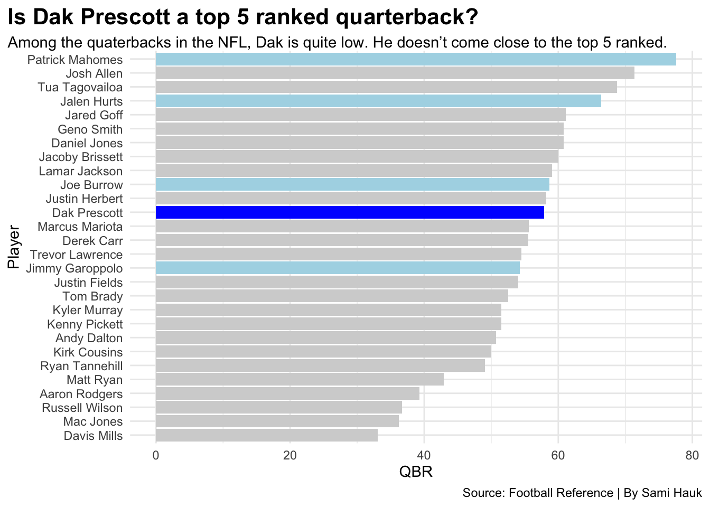
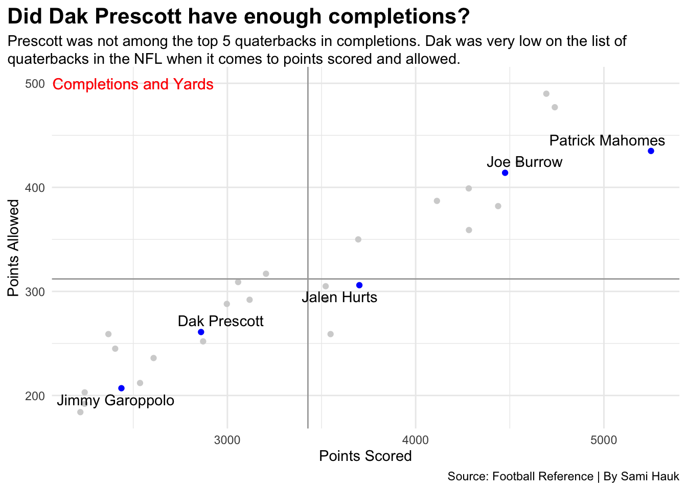
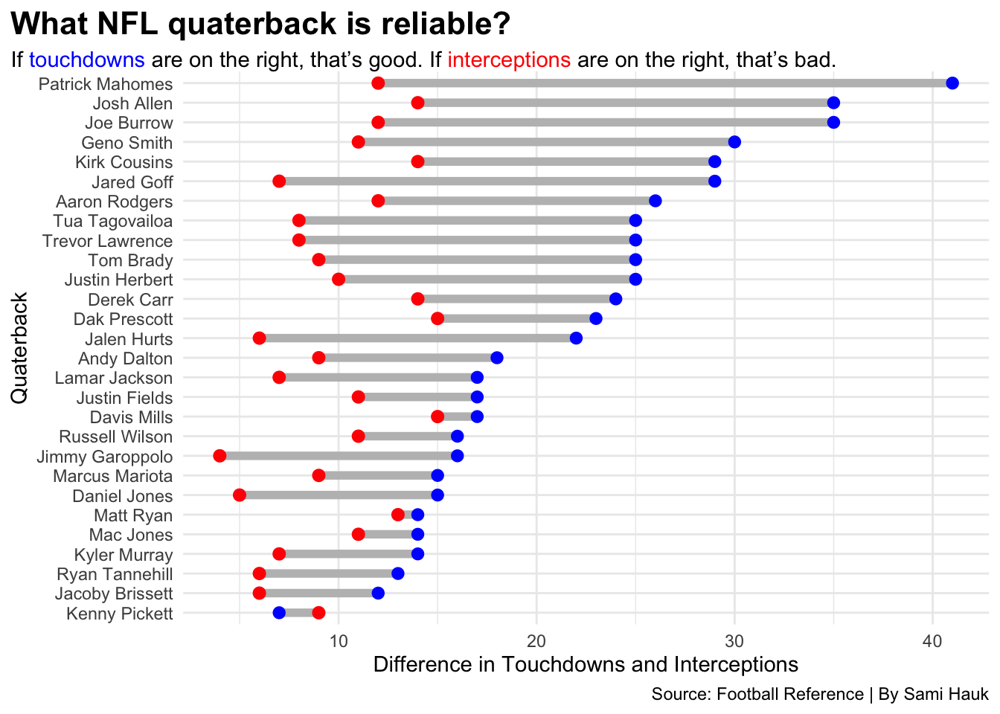

Code
library(tidyverse)
library(ggalt)
library(ggtext)
library(ggrepel)Sami Hauk
April 16, 2023
The Dallas Cowboys and Dak Prescott have been a running question for years. In Dak’s 2022 season, his rankings didn’t justify the Dallas Cowboys reasoning to keep him. Is there something we aren’t seeing, that they are?
We are going to look at the top ranked quarterback in the NFL. In doing so, we will use a variety of charts to help our understanding the statistical sides of how we can determine which quarterbacks are reliable. The charts will consist of touchdown vs interceptions, quarterback rankings and points scored vs points allowed.
qbs <- read_csv("2022 NFL Passing.csv") %>%
filter(Pos == "QB" & G > 10) %>%
mutate(Player=gsub("*","",Player, fixed=TRUE)) %>%
mutate(Player=gsub("+","",Player, fixed=TRUE)) %>%
mutate(
fill_color = case_when(
Player == "Patrick Mahomes" ~ "1",
Player == "Jalen Hurts" ~ "1",
Player == "Joe Burrow" ~ "1",
Player == "Jimmy Garoppolo" ~ "1",
Player == "Dak Prescott" ~ "2",
TRUE ~ "3"
)
)
winners <- c("Patrick Mahomes", "Jalen Hurts", "Joe Burrow", "Jimmy Garoppolo", "Dak Prescott")
winningqbs <- qbs %>% filter(Player %in% winners)
ggplot() +
geom_bar(data=qbs, aes(x=reorder(Player, QBR), weight=QBR, fill=fill_color)) +
scale_fill_manual(values=c("light blue", "blue", "light grey")) +
coord_flip() +
labs(
title= "Is Dak Prescott a top 5 ranked quarterback?",
subtitle = "Among the quaterbacks in the NFL, Dak is quite low. He doesn't come close to the top 5 ranked.",
caption = "Source: Football Reference | By Sami Hauk",
x = "Player",
y = "QBR"
) +
theme_minimal() +
theme(
legend.position = "none"
) +
theme(
plot.subtitle = element_textbox_simple(),
plot.title.position = "plot",
plot.title = element_text(size = 16, face = "bold")
) 
The last time the Dallas Cowboys won or attended an NFC championship was on January 14, 1996 against the Green Bay Packers. Since then, the Cowboys have had a few different quarterbacks, one being Dak Prescott. By looking at statistics over the past few years that Dak Prescott has been in the league, Dak has not been a reliable quarterback. He is looking at a total of 261 completions at a rate of 66.2 completions in his 2022 season. Dak ended with 2860 yards gained. This number is decent, but not when it comes to the best of the best. Patrick Mahomes was at a total of 5250 and Joe Burrow was at 4475. This shows how much Dak needs to improve with his team to get in competition for a super bowl.
ggplot() +
geom_point(data=qbs, aes(x=Yds...12, y=Cmp), color= "light grey") +
geom_point(data=winningqbs, aes(x=Yds...12, y=Cmp), color= "blue" ) +
geom_vline(xintercept = 3427.679, color= "dark grey") +
geom_hline(yintercept = 312, color="dark grey") +
geom_text_repel(data=winningqbs, aes(x= Yds...12, y=Cmp, label= Player)) +
geom_text(aes(x=2500, y=500, label= "Completions and Yards"), size=4, color= "red") +
geom_text(aes(x=2500, y=500, label= "Completions and Yards"), size=4, color= "red") +
labs(
title= "Did Dak Prescott have enough completions?",
subtitle = "Prescott was not among the top 5 quaterbacks in completions. Dak was very low on the list of quaterbacks in the NFL when it comes to points scored and allowed.",
caption = "Source: Football Reference | By Sami Hauk",
x = "Points Scored",
y = "Points Allowed"
) +
theme_minimal() +
theme(
plot.subtitle = element_textbox_simple(),
plot.title.position = "plot",
plot.title = element_text(size = 16, face = "bold")
) 
Many other quarterbacks have been able to show a consistent performance over the years, while Dak has yet to show enough statistics to give the Dallas Cowboys hope in a championship. When beginning his career at the Dallas Cowboys, fans found a new hope in the team. As he was winning games for the team, there was lots of potential for Prescott. After many injuries and years, these statistics are not backing up his hopes in a super bowl. At 29 years old, Dak was ranked 20th in the league after the 2022 season. He had a whopping 23 touchdowns to complete the season, while Patrick Mahomes was at an outstanding number of 41 touchdowns.
ggplot() +
geom_dumbbell(
data=qbs,
aes(y=reorder(Player, TD), x=TD, xend=Int),
size = 2,
colour = "grey",
colour_x = "blue",
colour_xend = "red") +
labs(
title="What NFL quaterback is reliable?",
subtitle = "If <span style = 'color:blue;'>touchdowns</span> are on the right, that's good. If <span style = 'color:red;'>interceptions</span> are on the right, that's bad.",
x = "Difference in Touchdowns and Interceptions",
y = "Quaterback",
caption = "Source: Football Reference | By Sami Hauk",
) +
theme_minimal() +
theme(
plot.subtitle = element_textbox_simple(),
plot.title.position = "plot",
plot.title = element_text(size = 16, face = "bold")
) 
The Dallas Cowboys will not be able to attend a super bowl by the looks of these statistics with Dak Prescott. After reviewing and comparing Dak to the rest of the NFL quarterbacks and top five ranked, Prescott does not come close in a majority of the categories. Why do the Cowboys continue to give him chances? We may not know. Dak is a great face for the Cowboys, yet he has not produced enough for Dallas to continue with him.